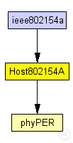

This documentation is released under the Creative Commons license
This documentation is released under the Creative Commons licenseThis host NED module models a host using an IEEE 802.15.4A correlation receiver.
Author: Jérôme Rousselot
Citation of the following publication is appreciated if you use the MiXiM UWB PHY model for a publication of your own. J. Rousselot, J.-D. Decotignie, An ultra-wideband impulse radio PHY layer model for network simulation. SIMULATION January 2011 vol. 87 no. 1-2 82-112.
For more information, see also:
[1] J. Rousselot, J.-D. Decotignie, An ultra-wideband impulse radio PHY layer model for network simulation. SIMULATION January 2011 vol. 87 no. 1-2 82-112. http://dx.doi.org/10.1177/0037549710377767.
[2] J. Rousselot, Ultra Low Power Communication Protocols for UWB Impulse Radio Wireless Sensor Networks. EPFL Thesis 4720, 2010. http://infoscience.epfl.ch/record/147987.
[3] J. Rousselot, J.-D. Decotignie, A High-Precision Ultra Wideband Impulse Radio Physical Layer Model for Network Simulation. Second International Omnet++ Workshop,Simu'TOOLS, Rome, March 2009. http://portal.acm.org/citation.cfm?id=1537714.
The following diagram shows usage relationships between types. Unresolved types are missing from the diagram. Click here to see the full picture.
The following diagram shows inheritance relationships for this type. Unresolved types are missing from the diagram. Click here to see the full picture.
| Name | Type | Description |
|---|---|---|
| WirelessNodeBattery | compound module |
Standard host module for a wireless MiXiM host with configurable NIC, and OSI layers, and mobility module. Additional it includes a battery module plus statistics. |
| Name | Type | Description |
|---|---|---|
| ieee802154a | network |
This example illustrates the use of the IEEE 802.15.4A UWB-IR simulation model implemented in MiXiM. The omnetpp.ini files comprises two scenarios. Both scenarios involve only two hosts. |
| Name | Type | Default value | Description |
|---|---|---|---|
| networkType | string | "org.mixim.modules.netw.DummyRoute" |
type of the network layer |
| transportType | string | "" |
type of the transport layer |
| sessionType | string | "" |
type of the session layer |
| presentationType | string | "" |
type of the presentation layer |
| applicationType | string | "org.mixim.modules.application.TestApplication" |
type of the application layer |
| mobilityType | string | "StationaryMobility" |
type of the mobility module |
| arpType | string | "org.mixim.modules.netw.ArpHost" |
type of address resolution module |
| nicType | string | "org.mixim.modules.nic.Nic802154A" | |
| numHosts | int |
total number of hosts in the network |
| Name | Value | Description |
|---|---|---|
| display | bgb=210,450,white;i=device/palm;i2=status/battery;b=40,40,rect | |
| node |
| Name | Direction | Size | Description |
|---|---|---|---|
| radioIn | input |
gate for sendDirect |
| Name | Type | Default value | Description |
|---|---|---|---|
| netwl.stats | bool |
stats switch |
|
| netwl.headerLength | int |
length of the network packet header (in bits) |
|
| tranl.stats | bool |
stats switch |
|
| tranl.headerLength | int |
length of the network packet header (in bits) |
|
| sessl.stats | bool |
stats switch |
|
| sessl.headerLength | int |
length of the network packet header (in bits) |
|
| presl.stats | bool |
stats switch |
|
| presl.headerLength | int |
length of the network packet header (in bits) |
|
| appl.headerLength | int |
length of the application message header (in bits) |
|
| batteryStats.notAffectedByHostState | bool | true | |
| batteryStats.debug | bool | false |
write per-activity and per-device statistics to omnetpp.sca (if false, only total energy and lifetime are written) |
| batteryStats.detail | bool | true |
subscribe to battery status and record time series data in omnetpp.vec (resolution depends on battery's publishDelta) |
| batteryStats.timeSeries | bool | false | |
| battery.debug | bool | false | |
| battery.nominal | double |
nominal battery capacity |
|
| battery.capacity | double |
battery capacity |
|
| battery.voltage | double |
nominal voltage |
|
| battery.resolution | double |
capacity is updated at least every resolution time |
|
| battery.publishDelta | double |
if > 0, capacity is published to the BB each publishTime interval |
|
| battery.publishTime | double |
number of modules that will draw energy from the battery |
|
| battery.numDevices | int |
// // This host NED module models a host using an IEEE 802.15.4A correlation receiver. // // @author Jérôme Rousselot // // Citation of the following publication is appreciated if you use the MiXiM UWB PHY model // for a publication of your own. // J. Rousselot, J.-D. Decotignie, An ultra-wideband impulse radio PHY // layer model for network simulation. SIMULATION January 2011 vol. 87 no. 1-2 82-112. // // For more information, see also: // // [1] J. Rousselot, J.-D. Decotignie, An ultra-wideband impulse radio PHY // layer model for network simulation. SIMULATION January 2011 vol. 87 no. // 1-2 82-112. <a href="http://dx.doi.org/10.1177/0037549710377767">http://dx.doi.org/10.1177/0037549710377767</a>. // // [2] J. Rousselot, Ultra Low Power Communication Protocols for UWB // Impulse Radio Wireless Sensor Networks. EPFL Thesis 4720, 2010. // <a href="http://infoscience.epfl.ch/record/147987">http://infoscience.epfl.ch/record/147987</a>. // // [3] J. Rousselot, J.-D. Decotignie, A High-Precision Ultra Wideband Impulse Radio Physical Layer Model // for Network Simulation. Second International Omnet++ Workshop,Simu'TOOLS, Rome, March 2009. // <a href="http://portal.acm.org/citation.cfm?id=1537714">http://portal.acm.org/citation.cfm?id=1537714</a>. // module Host802154A extends WirelessNodeBattery { parameters: applicationType = default("org.mixim.modules.application.TestApplication"); arpType = default("org.mixim.modules.netw.ArpHost"); nicType = default("org.mixim.modules.nic.Nic802154A"); networkType = default("org.mixim.modules.netw.DummyRoute"); int numHosts; // total number of hosts in the network submodules: stats: phyPER { @display("p=140,310"); } }
This documentation is released under the Creative Commons license